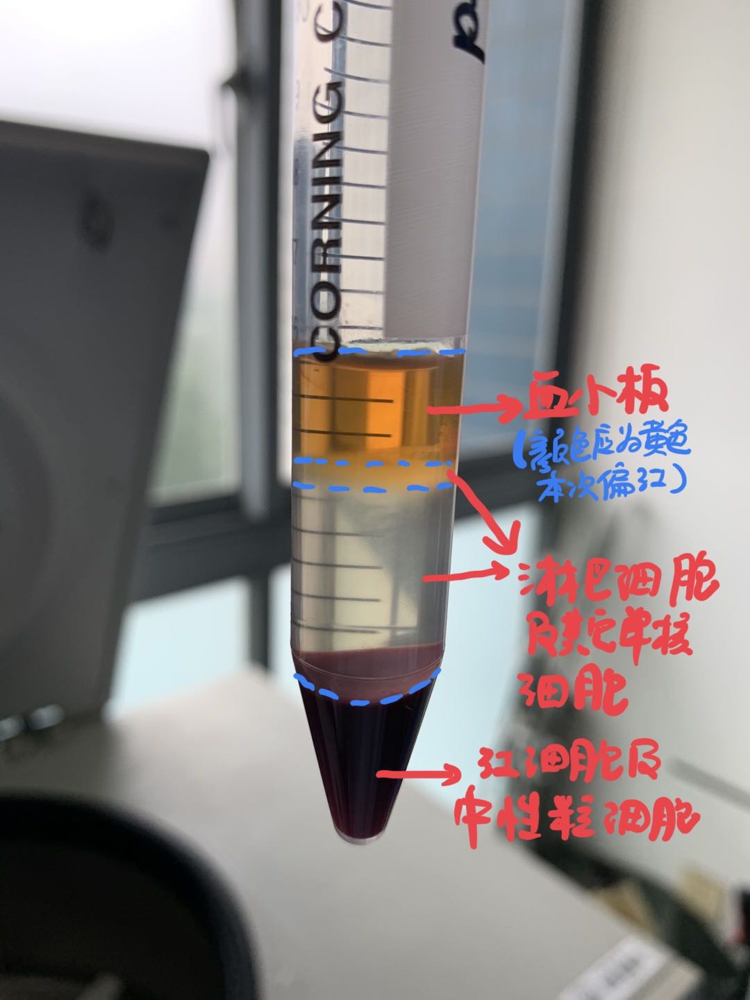

利用梯度离心法分离人外周血PBMC
1.实验试剂
- Histopaque ®-1077（Sigma-Aldrich）：一种无菌、经内毒素检测的聚蔗糖及泛影钠溶液，并调整密度至1.077g/mL。这种即用型的培养基可有助于从小体积（3ml）的全血中进行活性淋巴细胞和其他单核细胞的快速恢复。 √ 外周血单核细胞（PBMC）以及骨髓单核细胞（BMMC）的分离 √ 通过离心进行单核细胞的纯化 √ 人类淋巴细胞的分离 √ 从全血中进行乳腺癌循环肿瘤细胞（CTC）的分离
- Histopaque ®-1119（Sigma-Aldrich）: 一种含有聚蔗糖和泛影酸钠的溶液，密度经调节后为1.119 g/mL。 与Histopaque-1077结合使用，可分离单核细胞和粒细胞。
- Histopaque ®-1083（Sigma-Aldrich）：一种含有聚蔗糖和泛影酸钠的混合溶液，密度调节至1.083g/mL。 有助于从大鼠、小鼠和其他小型哺乳动物中分离活的单核细胞。
2.实验步骤
-
选1077用于人外周血单核细胞分离。
-
提前将1077置于室温，平时在2~8°C保存。
-
在15ml离心管中加入3ml 1077，倾斜离心管，用巴斯德管慢慢滴加EDTA抗凝全血，形成1077与全血分离液面后，将总量为3ml的血液全部加至1077以上（可能会出现小血滴渗入1077层）。
-
室温400 x g离心30 min（不要太冷，这样会影响PBMC的恢复），离心机的升降速度均调至3（0~9为离心机升降速度的档位，0档表示最慢上升至指定最高速或最慢降至停止，9档反之），慢速的升降可以使分层更明显，太快升降容易导致血小板层与PBMC层分界模糊。分层后如下图。 
-
建议可以先用巴斯德管移走血小板层，再吸取包含淋巴细胞和其他单核细胞的云雾状和透明层至新离心管中，加入10ml 等渗PBS（pH7.2~7.4为等渗PBS）用吸管轻柔吹匀，250 x g离心10 min，弃上清
-
加入5ml PBS清洗细胞1-2次，每次250 x g离心10 min。做后续实验。